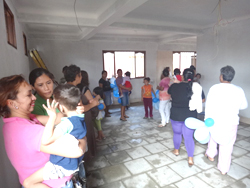
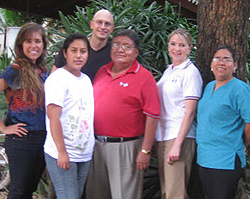
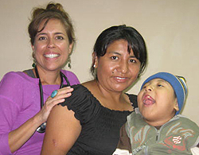

|
MAY 2012
The 2012 RVF work trip was a huge success. Chief Medical Officer Dr. Darlene Ray, along with RVF Founder and Director Dr. Jonathan Melk and Board Member Dr. Lisa Hunt, were able to see 23 Rosa Vera Fund patients, and move forward with critical interventions that will change their lives for the better. They also met with community health workers and RVF scholarship recipients, and had the opportunity to check on their progress and goals achieved.
La Escuelita, which means the little school, is under construction and almost completed. This is a joint project of the RVF and El Consejo de Salud Rural Andino (CSRA), our Bolivian partners, to build and operate the first combined care center, where RVF patients will receive physical therapy and have the chance to interact with other children in a clean and safe environment. Drs. Ray, Hunt and Melk were amazed by the progress made on the school since construction began, and are excitedly anticipating filling the school with patients, CSRA employees' children, therapists and specialists, all under the same roof for the first time. La Escuelita will provide therapies for children who desperately need it, and childcare for the dedicated employees of CSRA.
Participants were:
- Lisa Hunt MD, Pediatrician
Community Pediatrician, Mountain Park Health Centers, Arizona
Evaluated RVF patients in Villa Cochabamba Health Center
This was Dr. Hunt's third year volunteering in Montero for the RVF.
READ MORE ABOUT DR. HUNT >>
- Darlene Ray MD, pediatrician
Community Pediatrician, Chiricahua Community Health Centers, Arizona
Evaluated RVF patients at the Villa Cochabamba Health Center and began documenting program outcome
This was Dr. Ray's third year volunteering in Montero for the RVF.
- Dr. Jonathan Melk, president of RVF
Community Pediatrician, Chiricahua of Community Health Centers, Arizona
Facilitated the work trip, as well as completed RVF programs oversight & evaluation
2011 WORK TRIP >> 2010 WORK TRIP >> 2009 WORK TRIP >>
|

Our patients and their parents were thrilled to see La Escuelita taking shape

RVF doctors with the Bolivian physicians who follow our patients throughout the year

Dr. Hunt with a patient and his mother
|
|